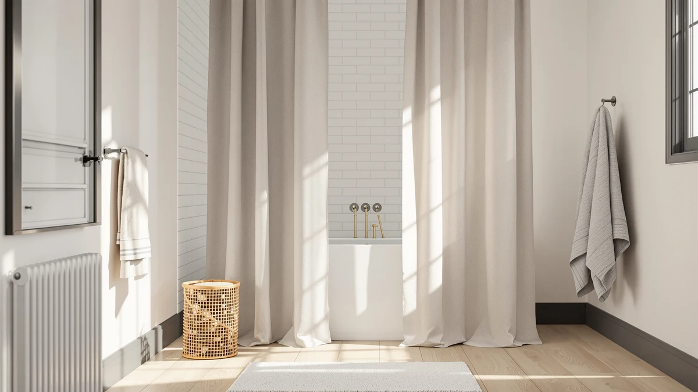

Amazon Basics No Drill Review (2026): Worth It?
Prices and picks verified as of October 2026. Independent, reader-supported reviews.


Quick Answer
The Amazon Basics No Drill Easy earns its spot at $22.84 thanks to a 4.4 out of 5 rating across 1,324 verified reviews, the strongest review history of the four products in this Amazon Basics No Drill review. Its polyester and PEVA build and tension-based mount skip the need for drilling into tile or drywall, and none of the three alternatives below match its review count.
Our pick: Amazon Basics No Drill Easy, $22.84 Check Price on Amazon
Bottom line: our top pick is the Amazon Basics No Drill Easy Install Sturdy Shower Curtain at $22.84.
Things to Know Before You Buy
- This Amazon Basics No Drill review centers on the Amazon Basics No Drill Easy ($22.84), a tension-mounted curtain built from a polyester and PEVA blend.
- A 4.4 out of 5 rating across 1,324 verified reviews gives it a review history the three alternatives below do not match on their listings.
- CutebriCase, Nesphy, and TEECK, covered as alternatives, all price at $21.99 but differ in pattern, hook design, and installation method.
- The no-drill design relies on tension rather than hardware mounted into tile or drywall, so check your shower's wall width before ordering.
This Amazon Basics No Drill review looks at whether a $22.84 tension-mounted curtain can match the stability of a drilled rod, a question that matters most to renters and anyone who would rather skip patching tile. The Amazon Basics No Drill Easy carries a 4.4 out of 5 rating across 1,324 verified reviews and a polyester and PEVA build, giving it a review history most no-drill curtains in this price range do not show on their listings.
We compared it against three products shoppers cross-shop at a similar price: CutebriCase's Ombre Blue Modern Geometric curtain, Nesphy's No Hook Rustic Farmhouse curtain, and TEECK's adjustable 32 to 80 inch curtain rod, all priced at $21.99. Each one trades the Amazon Basics set's review depth for a different look or installation style, so the right pick depends on whether you value a proven track record or a specific aesthetic.
Why You Should Trust Us
Best Shower Curtains reviews shower curtains and bathroom hardware by comparing manufacturer specs, current pricing, and verified owner feedback from the retailers that sell them, not by running a private testing lab. Ilane Tall, our home and bath editor, researched this Amazon Basics No Drill review by checking the curtain's listed material, price, rating, and review count against CutebriCase, Nesphy, and TEECK, the products shoppers most often compare it with in this price range. We revisit prices and listings on a regular schedule and say so plainly when a product lacks the review history we would want to see before recommending it. Where we cannot check a claim against a specific verified rating or review count, we say so rather than fill the gap with a guess.
Our Research Experience
We do not run a physical testing lab, and we have not hung the Amazon Basics No Drill Easy in a shower ourselves. Our process instead compares the published material, price, and rating against similar curtains, then checks that against what verified owners report about fit, stability, and value on comparable listings. For this Amazon Basics No Drill review, that meant lining up the curtain's polyester and PEVA blend, $22.84 price, and 4.4 out of 5 rating against CutebriCase, Nesphy, and TEECK to see where the review history and no-drill design earn it a place in a crowded lineup. We flag it clearly when we cannot verify a claim against real owner feedback, rather than guessing at how a tension-mounted curtain holds up in a specific household's bathroom. That approach means we can speak confidently about price, material, and rating since those come straight from the listing, while we stay cautious about anything that depends on how a no-drill setup performs on your particular wall width.
Overview & Specs

Amazon Basics No Drill Easy
What we like
- A 4.4 out of 5 rating across 1,324 verified reviews gives it more review confidence than CutebriCase, Nesphy, or TEECK show on their listings
- The no-drill, tension-based design skips hardware mounted into tile or drywall, a plus for renters who cannot drill
- At $22.84, it prices within a dollar of all three alternatives on this page
Flaws but not dealbreakers
- A tension mount depends on wall width and friction, so it may need occasional tightening that a drilled rod would not require
- The listing does not break out an exact size, so measure your shower opening before ordering
- The plain polyester and PEVA build will not suit bathrooms that specifically want Nesphy's rustic farmhouse print or CutebriCase's geometric pattern
| Material | Polyester / PEVA |
| Size | — |
Amazon builds the curtain featured in this Amazon Basics No Drill review from a polyester and PEVA blend and mounts it with a tension-based, no-drill system rather than screws or anchors. That installation style matters most for renters or anyone who does not want to patch holes in tile or drywall when they move out. The 4.4 out of 5 rating across 1,324 verified reviews stands out next to CutebriCase, Nesphy, and TEECK, none of which carry a public review count anywhere near that total on this page.
That review depth also sets the Amazon Basics set apart from Nesphy's farmhouse print and CutebriCase's geometric design, since a no-drill, well-reviewed curtain works best for shoppers who weigh installation convenience and buyer feedback over a specific aesthetic. Buyers choosing between a drilled rod's stability and a no-drill setup's convenience will find that distinction more relevant than any price gap between the four products on this page.
What We Liked
The clearest reason to consider this Amazon Basics No Drill review's subject is the combination of review history and installation convenience. A 4.4 out of 5 rating across 1,324 verified reviews gives buyers a larger sample to judge than CutebriCase's, Nesphy's, or TEECK's listings, none of which show a comparable public review count on this page. At $22.84, it costs about the same as those alternatives, so you are not paying extra for that confidence. The no-drill, tension-based design also means renters and anyone who does not want to damage tile or drywall can hang it without extra hardware. Shoppers who weigh review depth and easy installation over a specific print or hook style will notice the gap before they even open the box. The polyester and PEVA build does some extra work too, since it should resist water better than an all-cotton curtain would in the same price range.
What Could Be Better
This Amazon Basics No Drill review's biggest tradeoff is the tension mount itself. A friction-based system can loosen over time depending on wall width, so it may need occasional readjustment that a drilled rod would not require. The listing also does not spell out an exact curtain size, so measure your shower opening before ordering rather than assume a standard fit. It will not suit a bathroom that specifically wants Nesphy's rustic farmhouse print or CutebriCase's blue geometric look, since the Amazon Basics set sticks to a plainer design. And if you are comparing purely on price, CutebriCase, Nesphy, and TEECK all undercut it slightly at $21.99 each.
Who Is It For?
This Amazon Basics No Drill review points to the Easy model as a fit for renters, students, and anyone who wants a stable curtain setup without drilling into tile or drywall. It is a reasonable pick if you have compared Nesphy's farmhouse design or CutebriCase's geometric pattern and want the deeper review history instead. Skip it if your bathroom specifically calls for a rustic print or a bold ombre look, since those alternatives cover that case more directly, or if you would rather have a permanently drilled rod and do not mind the install. Shoppers who want a dependable, widely reviewed no-drill curtain may prefer the Amazon Basics set for that reason alone, even if a differently styled alternative costs about a dollar less.
Alternatives to Consider
If the plain design or the tension-mount system rules out the Amazon Basics set for your bathroom, these three products round out the comparison in this Amazon Basics No Drill review, each priced at $21.99. All three trade some of its review history for a different look or installation style, so weigh which priority matters more before choosing between them. CutebriCase's Ombre Blue Modern Geometric curtain swaps the plain look for a bold pattern, Nesphy's No Hook Rustic Farmhouse curtain removes the need for separate hooks, and TEECK's adjustable 32 to 80 inch rod covers shoppers who would rather mount a traditional rod instead of relying on tension alone.

Editor's Pick
CutebriCase Ombre Blue Modern Geometric
CutebriCase's Ombre Blue Modern Geometric curtain costs $21.99, a dollar less than the Amazon Basics set, and carries a 4.7 out of 5 rating across 2,983 verified reviews, the deepest review history of the four products here, worth considering if you want a bolder pattern over a plain design.
$21.99
Check Price on Amazon
Best Value
Nesphy No Hook Rustic Farmhouse
Nesphy's No Hook Rustic Farmhouse curtain runs $21.99 and skips separate hooks the way the Amazon Basics set skips drilling, a fit if a farmhouse print suits your bathroom better than a plain build.
$21.99
Check Price on Amazon
Premium Choice
TEECK Shower Curtain Rod 32-80
TEECK's adjustable 32 to 80 inch curtain rod costs $21.99 and suits shoppers who would rather mount a traditional rod than rely on the Amazon Basics set's tension system, especially in a wider shower opening.
$21.99
Check Price on AmazonDoes the Amazon Basics No Drill Easy curtain avoid hardware entirely?
It mounts with a tension-based system rather than screws or anchors, so you will not need to drill into tile or drywall.
What size is the Amazon Basics No Drill Easy curtain?
The listing does not break out an exact size on this page, so measure your shower opening directly and compare it against the product listing before you order to avoid a mismatch.
Frequently Asked Questions
Does the Amazon Basics No Drill Easy curtain avoid hardware entirely?
It mounts with a tension-based system rather than screws or anchors, so you will not need to drill into tile or drywall. Wall width and surface type affect how secure the fit feels, so measure your shower opening before ordering.
What size is the Amazon Basics No Drill Easy curtain?
The listing does not break out an exact size on this page, so measure your shower opening directly and compare it against the product listing before you order to avoid a mismatch.
How does the Amazon Basics No Drill Easy compare to the Nesphy No Hook Rustic Farmhouse curtain?
Nesphy's curtain also skips extra hardware, in its case separate hooks, and costs $21.99, about 85 cents less than the Amazon Basics set. The Amazon Basics set counters that with a 4.4 out of 5 rating across 1,324 verified reviews, a review history Nesphy's listing does not match. Choose Nesphy for its farmhouse print, and the Amazon Basics set if review confidence matters more to you than saving less than a dollar.
Final Verdict
This Amazon Basics No Drill review comes down to a simple tradeoff: pay $22.84 for a well-reviewed, no-drill curtain, or choose CutebriCase, Nesphy, or TEECK for a different look, hook style, or mounting method at a similar price. The Amazon Basics No Drill Easy's 4.4 out of 5 rating across 1,324 verified reviews and tension-based, drill-free design earn its place for bathrooms that want review confidence and an install renters can manage without tools. If you need a bolder pattern or a farmhouse print instead, CutebriCase and Nesphy cover those needs directly, and TEECK's rod suits anyone who would rather mount a traditional setup. For most people who want a dependable no-drill curtain backed by real owner feedback, the Amazon set is the pick worth checking out first.